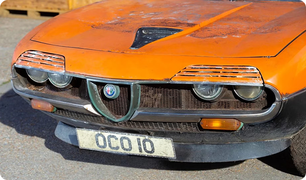

Barn Find in Italy Uncovers Dozens of Rare Alfa Romeos
April 20, 2025
Car hunters struck gold in Turin, Italy, where over 30 rare Alfa Romeos were discovered in a dusty warehouse. Included in the find were a 1965 Giulia TZ, several GTVs, and even a race-prepped Montreal. Local authorities have confirmed the cars belonged to a former Alfa Romeo engineer who passed away without heirs.
Restoration experts are already bidding on the rights to bring these historic models back to life. This unexpected discovery is being called one of the most important barn finds of the decade.